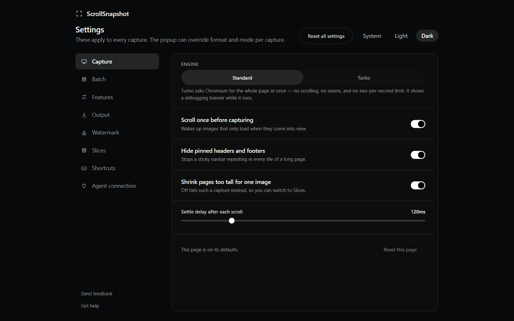

A truer palette
The palette no longer sits over the capture as a card. It is one icon at the top right of the result page, under Done. Click it for every colour with its hex value and its share of the image; click a colour to copy it, or Copy all for the whole palette, one hex per line.
It also lists different colours. Small design colours, like a button, a badge or the text, are kept instead of a fourth shade of the background. A blend that is not on the page is never listed, and up to eight colours are shown. The guide to the colour palette explains how it chooses.
Back to the page
The result tab now opens right beside the page you captured. Close it, or press Done, and that page comes back to the front.
Tell us what you think
The bottom of the Settings menu has Send feedback and Get help, and, once you have used ScrollSnapshot for a while, Leave a review. Send feedback opens a short form on this site. The extension itself still sends nothing.

A review prompt that waits its turn
After a few days of use, ScrollSnapshot may ask, once and at most twice ever, whether you would leave a review. It asks only after you copy or download a capture, in a small card in a corner, never while a tool or notice is open. Don't ask again means it.
Getting the update
- Chrome updates extensions on its own, usually within a day or two of a release.
- To check now, open chrome://extensions, turn on Developer mode, and choose Update.
- Look for version 1.2.0 on ScrollSnapshot's card.